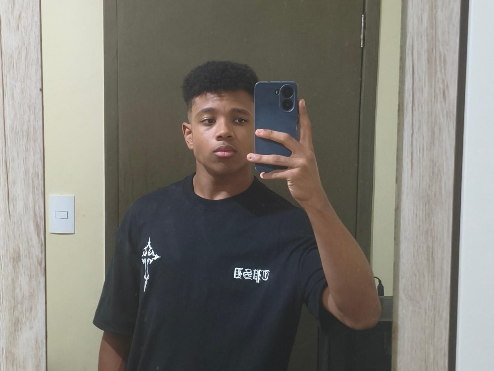

Geral
Nascido em 27 de agosto de 2009, em Cascavel (PR), Brayan Alves dos Santos. Sua rotina divide-se entre os estudos e o desenvolvimento de programação, além da prática regular de esportes. No campo do entretenimento, gosta de jogar jogos e ao ver filmes e séries.